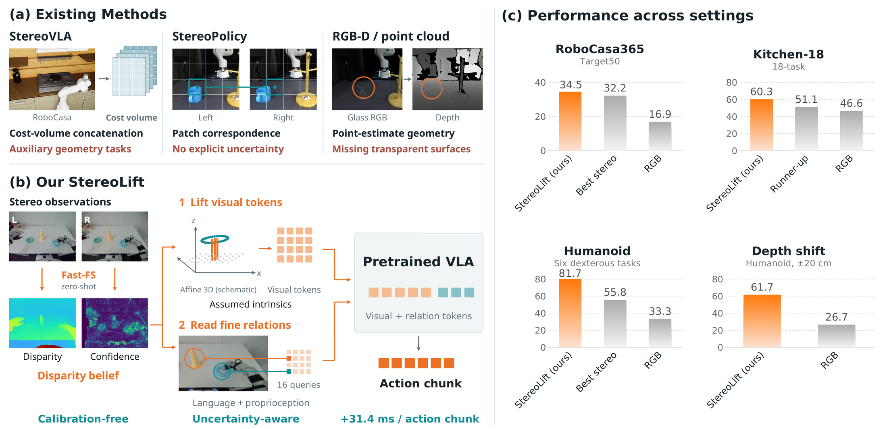
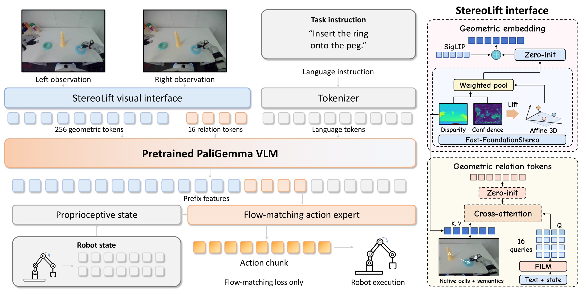
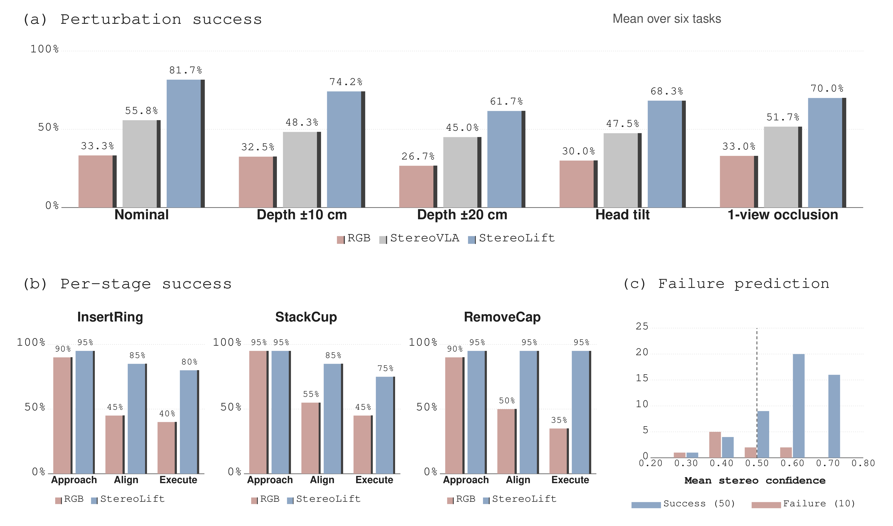
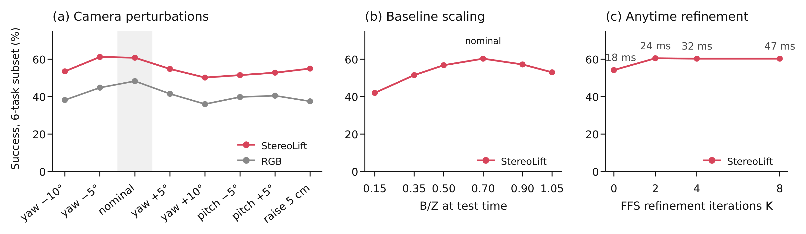

01Abstract
Vision-language-action (VLA) models inherit rich semantics from large-scale pretraining but capture limited metric geometry from monocular images, hindering precise and contact-rich manipulation. Existing approaches inject geometry through depth maps, point clouds, or auxiliary 3D objectives. However, they typically require camera calibration, discard depth uncertainty, or modify the pretrained backbone. To address these limitations, we propose StereoLift, a calibration-free framework that conditions a pretrained VLA on the disparity belief of a real-time zero-shot stereo foundation model. First, a geometric token embedding lifts each visual token into an affine-equivalent 3D frame using assumed intrinsics. A single zero-initialized projection injects the lifted coordinate and belief into the token. Second, language-conditioned relation tokens read hand-object relations at native disparity precision. We prove that lifting preserves geometry up to a fixed linear map and show that belief conditioning never increases flow-matching risk relative to point estimates. Experiments on RoboCasa365 show that StereoLift sets a new state of the art, raising the success rate of the base VLA from 16.9% to 35.2% and outperforming four conditioning designs under one training recipe. Notably, on a humanoid with two dexterous hands, StereoLift raises average success from 33.3% to 81.7% while remaining robust to depth shifts.

02Method
At each control step the policy receives a rectified stereo pair, a language instruction and the proprioceptive state, and predicts a 50-step action chunk. StereoLift builds on pi0.5 and introduces two components between its visual encoder and its vision-language backbone. The backbone, the action parameterization and the flow-matching objective are preserved; no auxiliary geometric supervision, depth labels or camera-parameter targets are used.

1Stereo belief, not a depth map
For every cell \(j\) of the quarter-resolution grid the frozen stereo model yields a belief statistic and a confidence that combines posterior entropy, matching sharpness and a left-right consistency check:
Proposition 2: conditioning on the belief \(\mathcal{B}\) never increases the Bayes-optimal flow-matching risk relative to a point estimate \(\widehat{D}=\varphi(\mathcal{B})\) derived from it.
2Calibration-free lifting
Cells are lifted with assumed intrinsics \((f',c'_x,c'_y)\) and scale \(s'\), which stay fixed. The policy never receives the true camera parameters.
Proposition 1: for an ideal rectified rig, \(X'=AX\) with \(A\) a fixed invertible linear map, so relative geometry is preserved exactly: \(X'_i-X'_j=A(X_i-X_j)\).
3Embedding + relation tokens
Confidence-weighted pooling aligns the belief with the \(16\times16\) token grid and a zero-initialized residual adds it to each visual token. Sixteen FiLM-conditioned queries then attend over all native cells, with a penalty on unreliable ones:
with \(\lambda=4\). Training uses only the flow-matching loss. The interface adds 3.3 M parameters.
03StereoLift on a humanoid with two dexterous hands
Six tasks on a Unitree G1-D humanoid with two BrainCo 6-DoF hands (26-dimensional actions): precise alignment, three-cup stacking, cap removal, bimanual assembly and handover, and long-horizon manipulation with occlusion. The head-mounted 640×480 stereo pair is used without calibration; the only correction is a constant vertical offset of −4.15 pixels estimated from the data. Each policy is trained from 100 demonstrations and evaluated over 20 trials per task. Every clip below is a rollout of the deployed StereoLift policy on the robot; the counts next to each task are the successes out of 20 for StereoLift and for the monocular pi0.5 baseline trained with the same configuration.

04RoboCasa365 rollouts
Successful StereoLift rollouts under the official Target50 protocol (trained on the 300-task Human300 set, evaluated on 50 target tasks in three groups), seen from the left agentview camera. Click a clip to pause it.
05Results
RoboCasa365 Target50 (official protocol)
| Method | Atomic seen | Composite seen | Composite unseen | Overall |
|---|---|---|---|---|
| pi0.5 (RGB, published) | 39.6 | 7.1 | 1.2 | 16.9 |
| Multi-view | 56.4 | 24.4 | 10.0 | 31.7 |
| RGB-D | 55.9 | 23.0 | 8.1 | 30.5 |
| StereoVLA | 50.3 | 28.1 | 7.7 | 30.0 |
| StereoPolicy | 56.8 | 26.4 | 10.9 | 32.8 |
| StereoLift (ours) | 60.3 | 29.4 | 11.3 | 35.2 |
Success rates (%) with Human300 training and 50 rollouts per task. Except for the published pi0.5 result, all methods are trained in our codebase using the same recipe.
Kitchen-18: conditioning designs and data efficiency
| Method | Representation | 100 demos | PnP | 30 demos |
|---|---|---|---|---|
| RGB (pi0.5) | none | 46.6 ± 3.4 | 46.0 | 50.8 |
| Multi-view | second-view tokens | 50.8 ± 5.2 | 69.0 | 43.1 |
| RGB-D | disparity channel | 50.8 ± 5.8 | 64.4 | 44.8 |
| StereoVLA | pooled cost volume | 51.1 ± 5.6 | 46.0 | 39.3 |
| StereoPolicy | cross-view attention | 47.8 ± 5.0 | 46.0 | 50.2 |
| StereoLift (ours) | belief embedding + relation tokens | 60.3 ± 5.4 | 73.6 | 56.2 |
Success rates (%) with 50 rollouts per task; task mean ± standard error over 18 tasks; PnP is the mean over the five pick-and-place tasks. All methods share the backbone, data, rectification and training configuration within each demonstration budget.
Ablations (30 demonstrations per task)
| Variant | Component assessed | Success | Δ |
|---|---|---|---|
| A: full model | — | 56.2 | 0.0 |
| B: without relation tokens | native-resolution reading | 52.1 | −4.1 |
| C: without geometric embedding | per-token spatial context | 50.0 | −6.2 |
| D: point estimate instead of belief | information beyond d_K | 51.8 | −4.4 |
Latency per 50-step action chunk
| RGB | Multi-view | RGB-D | StereoVLA | StereoPolicy | StereoLift | |
|---|---|---|---|---|---|---|
| Latency (ms) | 254.1 | 286.4 | 314.4 | 330.3 | 322.8 | 285.5 |
| Overhead (ms) | – | 32.3 | 60.3 | 76.2 | 68.7 | 31.4 |
Median latency on an A800 GPU, batch size 1, 256×256 inputs, K = 4 refinement iterations, 10 flow-matching steps.
Humanoid: successes out of 20 trials
| Method | InsertRing | StackCup | RemoveCap | BuildBlocks† | Handover† | DrawerItem | Average (%) |
|---|---|---|---|---|---|---|---|
| pi0.5 (RGB) | 8 | 9 | 7 | 0 | 9 | 7 | 33.3 |
| RGB-D (FFS disparity) | 10 | 11 | 9 | 2 | 11 | 9 | 43.3 |
| StereoVLA | 12 | 11 | 10 | 1 | 16 | 17 | 55.8 |
| StereoPolicy | 11 | 10 | 9 | 2 | 15 | 15 | 51.7 |
| StereoLift (ours) | 16 | 15 | 19 | 8 | 20 | 20 | 81.7 |
† bimanual tasks. All policies are fine-tuned from pi0.5 using the same training configuration.
Robustness to the rig and anytime refinement

06Citation
@misc{li2026stereolift,
title = {StereoLift: Enhancing Vision-Language-Action Models for Precise Manipulation via Calibration-Free Stereo Lifting},
author = {Li, Wenhao and Han, Zhongyi and Sun, Changfeng and Han, Liang and Yin, Yilong and Nie, Liqiang},
year = {2026},
howpublished = {\url{https://github.com/peacelwh/StereoLift}}
}